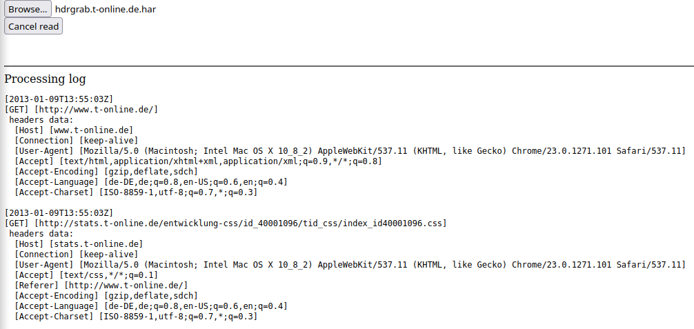
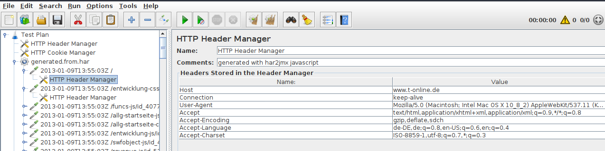
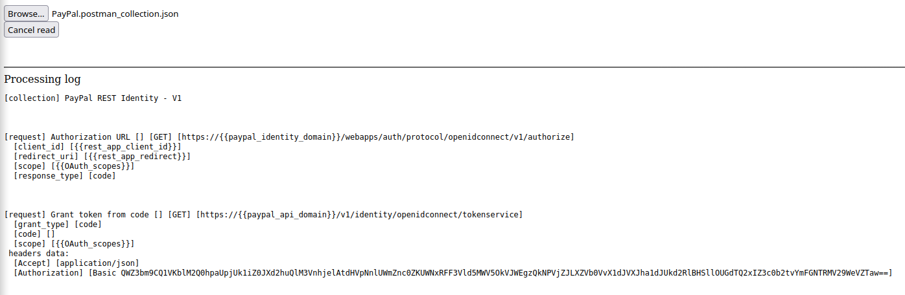
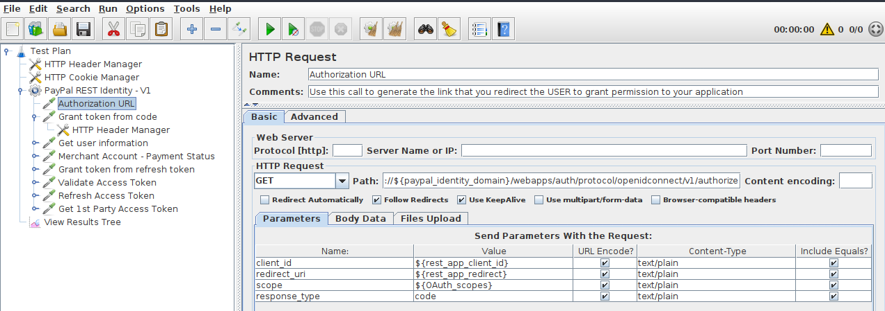
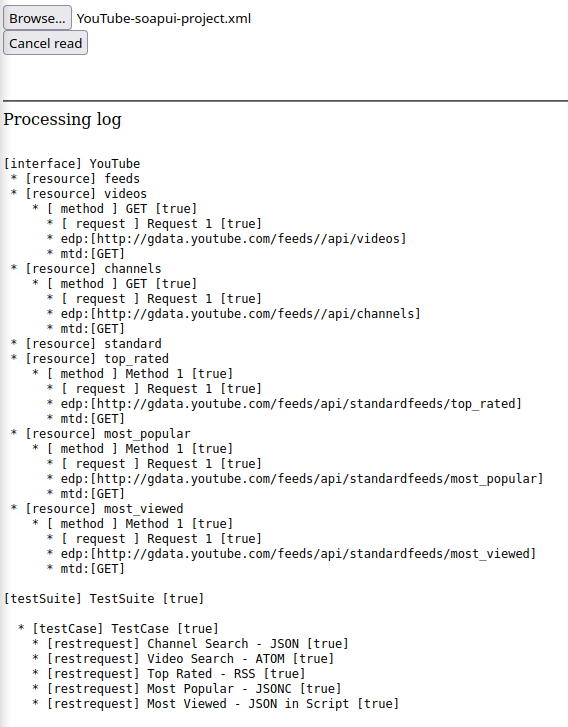
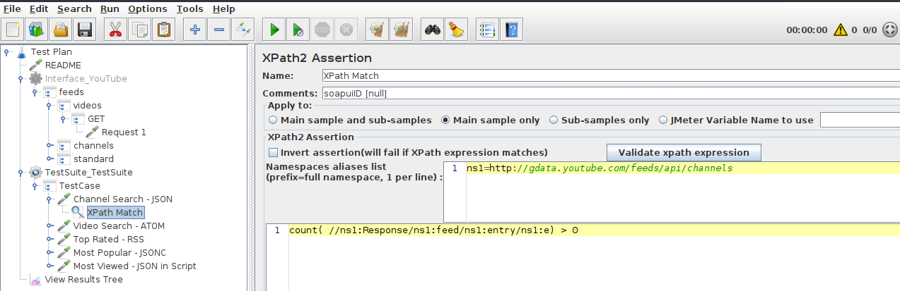

This is a set of converters for generating .jmx files form other well known formats:
Simple open with your browser related html converter file from sets directory. Then browse for file to be converted. Your .jmx file will be downloaded to default downloads location, as set in your browser.
Here are samples for processing of specyfic files and results:
har
processing:

results:

postman
processing:

results:

soapui
processing:

results:
